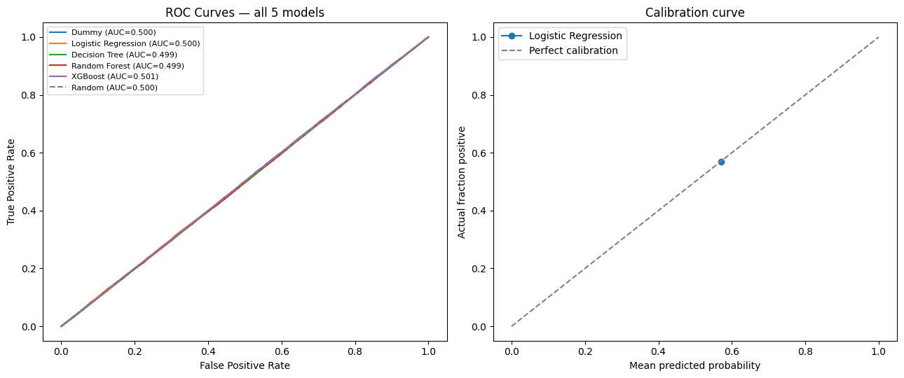
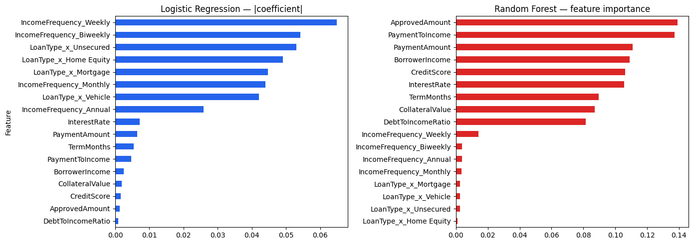
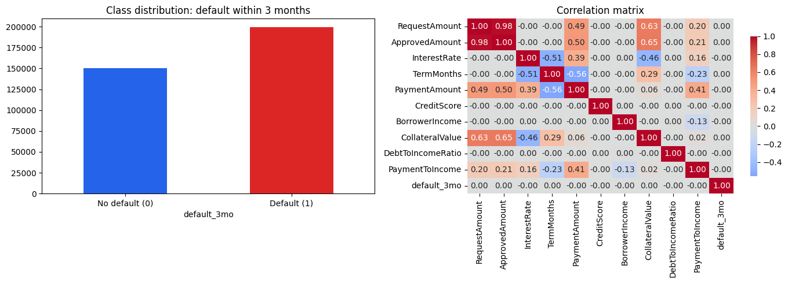

A lender asked for a model to predict which loans would default. After a leakage-controlled pipeline, five model families, and every check we could design, the most valuable answer turned out to be an evidence-backed one: don't deploy it.
Program
Bryant MSBA Capstone · Aug 2026
Team
2-person capstone team
Data
350,000 loans from two source systems
Stack
Python · scikit-learn · XGBoost · SHAP
Outcome
Test ROC-AUC ≈ 0.50 → do not deploy
The Ask
A retail lender originates four kinds of loans (mortgage, vehicle, home equity, and unsecured) and wanted to reduce charge-off losses by spotting high-risk loans earlier. The request had two linked parts: estimate each loan's probability of default within three months of origination, and for loans that do default, estimate the severity (Low, Medium, High, or Severe).
The goal was business intervention, not just a higher accuracy number. A missed default is especially costly, because the bank treats a risky borrower as safe and loses its chance to step in. So we defined success up front: test ROC-AUC meaningfully above 0.50, calibrated probabilities that beat a naive base-rate guess, and an acceptable false-negative rate. Fair-lending rules (ECOA / Regulation B) stayed in view throughout variable selection.
Data Preparation
Application-time data (credit score, income, requested and approved amounts, loan terms) and account performance data (payment history, charge-off status) were merged one-to-one on a unique application ID. The target was built directly from each loan's payment history, using only the first three payment periods, so nothing the bank wouldn't know at scoring time leaked into it.
raw loan records; 349,994 used after excluding 6 with too little payment history
columns after merging, narrowed to 17 predictors after leakage and redundancy screening
different raw date formats standardized to one
rows (33.3%) with silently wrong values from a parsing defect, found and fixed
A third of the payment histories used a format without separators, so three derived fields had quietly fallen back to placeholder values. All three were recomputed and verified against the unaffected rows, with zero mismatches.
Charge-off flags arrived as 0, 1, "1 ", Y, and N. Payment history included blanks and an undocumented code. Each was mapped to clean, documented values.
Original balance proved 100% identical to approved amount, and loan type matched 100% across both source files after mapping. Each duplicate was dropped only after it was checked.
Missing credit scores took the median (680). Unsecured loans got a collateral value of 0, because by definition they have none, while secured loans got the median for their loan type.
Doing It Right
Only information available at application or approval could be a predictor. Nine fields describing what happened after a loan was made were excluded, including payment history, charge-off status, current balance, and delinquency counts. Several of them are effectively the outcome itself in a different form.
All preprocessing (median imputation and scaling) lived inside a single scikit-learn Pipeline, fit only within each training fold, so no statistic from validation or test data reached the model. The data was split 80/20 with stratification to keep the class balance, and stability was checked with 5-fold cross-validation.
The 85% accuracy we didn't report. An earlier modeling pass had produced 85% accuracy predicting charge-offs. It used fields like delinquency counts and running balance, which already encode the outcome. In other words, it was reconstructing the answer rather than predicting it. Those numbers were deliberately not carried forward.
Approach
We reviewed twenty machine learning approaches across classification, regression, clustering, dimensionality reduction, and deep learning. We screened them on five criteria: target alignment, predictive strength, explainability, implementation readiness, and model diversity. Four distinct model families made the final comparison, each measured against a majority-class baseline that any real model must beat.
Tree models were tuned with RandomizedSearchCV (3-fold cross-validation), scored on ROC-AUC for default and macro F1 for severity.
Results
No model showed a meaningful ability to tell loans that default from loans that don't. Test ROC-AUC ranged from 0.4987 to 0.5014, statistically the same as random guessing (0.50). Cross-validation confirmed it was stable, not noise (0.5001 ± 0.0017), and the logistic regression's Brier score matched a naive base-rate guess to four decimal places.
| Model | Train AUC | Test AUC | Train–Test Gap | Test F1 |
|---|---|---|---|---|
| Dummy baseline | 0.5000 | 0.5000 | 0.0000 | 0.7261 |
| Logistic Regression | 0.5039 | 0.4998 | 0.0041 | 0.7261 |
| Decision Tree | 0.5143 | 0.4987 | 0.0156 | 0.7237 |
| Random Forest | 0.5355 | 0.4992 | 0.0363 | 0.7261 |
| XGBoost | 0.6053 | 0.5014 | 0.1040 | 0.7226 |
F1 looks healthy only because 57% of loans defaulted: the plain logistic regression simply predicted "default" for every loan, exactly like the baseline.

When performance is equal, the tiebreakers are calibration, stability, interpretability, and risk. A simple model makes "it learned nothing" visible right away.
Its 0.6053 training AUC dropped to 0.5014 on test, the largest gap of any model. That's exactly the kind of result that could mislead a team without a disciplined evaluation process into shipping a model that learned nothing.
Stress-Testing the Result
"The model doesn't work" is only useful if you can show it isn't a mistake. So we attacked the result from every direction we could:

Reading the Signal in the Noise
The most revealing finding wasn't about default at all. Credit score had essentially no relationship even with interest rate (correlation −0.0008), a link that is close to definitional in real underwriting. Add a 57% three-month default rate and loans that appeared to originate before their application date in nearly half the records, and the dataset looks synthetic, with fields generated independently of each other.
In a real bank, this exact pattern wouldn't mean credit risk is unpredictable. It would be a signal to stop and investigate the data pipeline itself, such as a mismatched join or a corrupted extract, before spending another hour on modeling.

Recommendations
A model without real discriminative power would send collections and servicing teams after loans that are no riskier than any others. It would also create fair-lending exposure by acting on differences that aren't real.
Confirm whether the data contains a real risk relationship before investing further. The pipeline is already built, so it can be re-run directly on real historical data.
Production default models rely on credit-bureau trade-line history, verified behavioral data, and economic conditions at origination. None of these were in this dataset.
Reflection
Accuracy can lie. A 57% accuracy score sounded reasonable until it turned out to be the model predicting "default" for every loan.
Simple models make failure visible. The interpretable baseline exposed the problem immediately. The most complex model nearly hid it behind an impressive training score.
A well-supported "no" is a real deliverable. Knowing a model shouldn't ship, and being able to prove it, protects a business from costly decisions built on signals that don't exist.
I bring analytics and AI together with product thinking, so models get judged by the decisions they support, not just the scores they post.